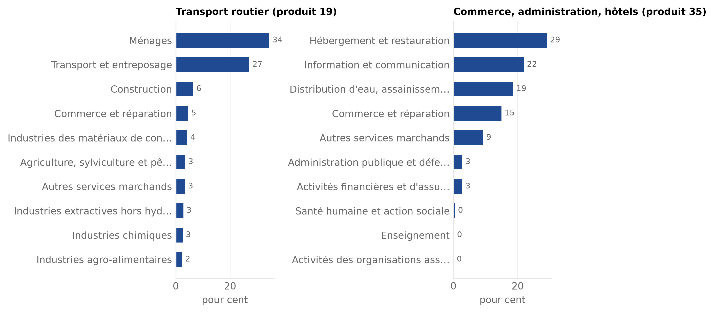
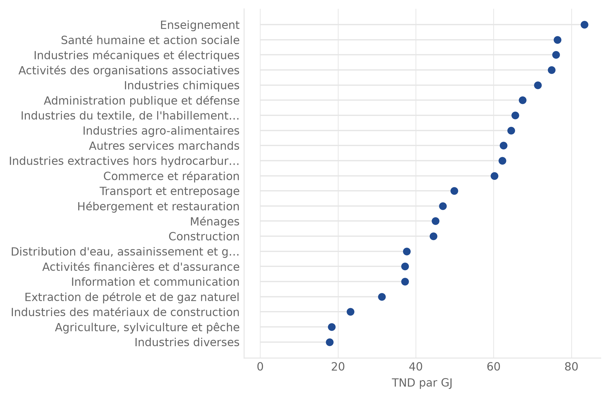
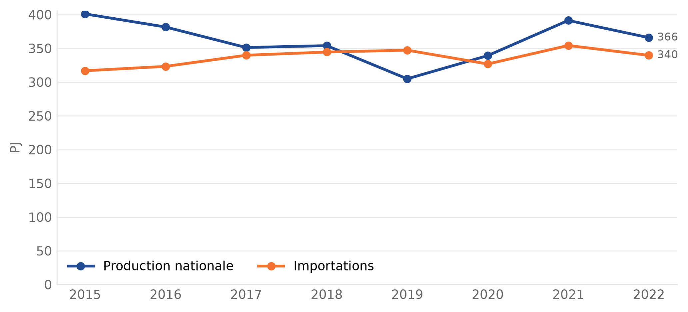
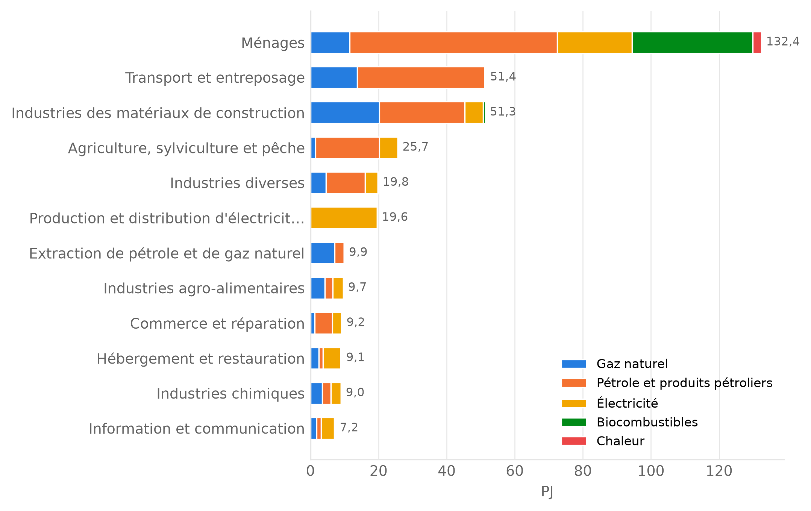
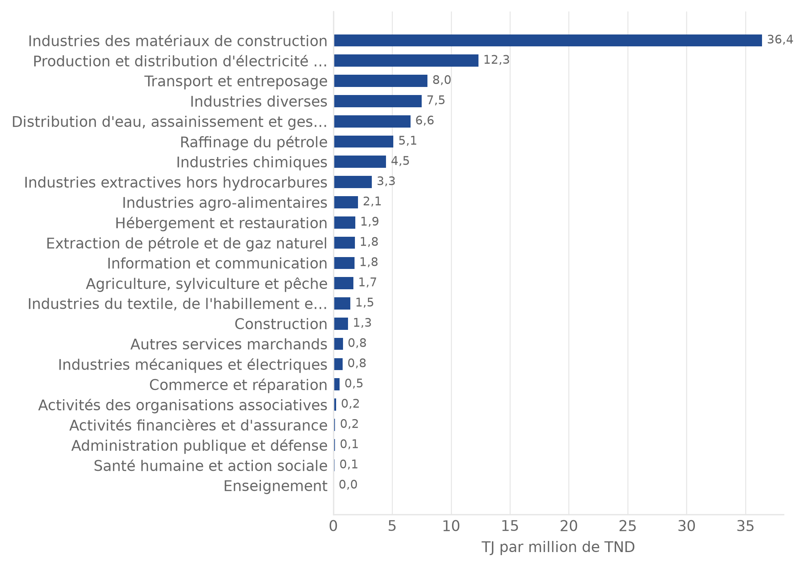
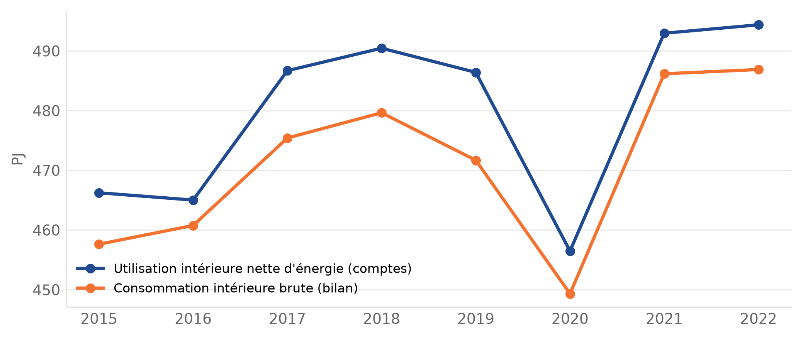

| Script | Objet |
|---|---|
| extract/01_extract_energy_balances.py | Bilans énergétiques de l'ONEM en format long, avec des codes stables |
| extract/02_extract_crt_inventory.py | Tableaux communs de notification de l'inventaire des gaz à effet de serre |
| extract/03_extract_supply_use_tables.py | Tableaux des ressources et des emplois des comptes nationaux |
| pefa/10_map_balance_to_iea_template.py | Le bilan tunisien dans le modèle AIE de l'outil du FMI |
| pefa/11_build_activity_keys.py | Rattachement de chaque flux du bilan aux branches des comptes nationaux |
| pefa/12_build_concordance_matrix.py | La matrice de concordance tunisienne, une par année |
| pefa/13_compile_pefa_tables.py | Tableaux physiques des ressources et des emplois, vérifiés avec l'outil du FMI |
| pefa/14_check_pefa_and_indicators.py | Contrôles d'équilibre, vraisemblance et indicateurs |
| pefa/15_export_pefa.py | Classeurs Excel en anglais, en français et en arabe |
| report/30_publish_tables.py | Tableaux et libellés pour les documents et l'explorateur de données |
Comptes physiques des flux d’énergie de la Tunisie
Concepts, méthodes de compilation et résultats, 2015 à 2022
Résumé
Les comptes physiques des flux d’énergie (PEFA) décrivent, en térajoules, comment l’énergie entre dans l’économie tunisienne, quelles branches d’activité et quels ménages la produisent et l’utilisent, et comment elle retourne à l’environnement. Ils présentent l’information du bilan énergétique national dans le format des comptes nationaux. L’utilisation de l’énergie peut ainsi être rapprochée de la production, de la valeur ajoutée et de l’emploi, et les comptes des émissions peuvent reposer sur la même répartition. Ce document expose les concepts, décrit chaque étape d’une compilation reproductible des comptes de 2015 à 2022 et présente les premiers résultats.
En 2022, l’économie a obtenu 366 pétajoules (PJ) de produits énergétiques de la production nationale et 340 PJ des importations. Les importations ont couvert 62 % des ressources en gaz naturel. Les ménages ont été les premiers utilisateurs finals, avec 34 % de l’énergie utilisée à des fins énergétiques, devant la branche « transport et entreposage » et la branche « industries des matériaux de construction ». L’utilisation intérieure nette d’énergie, principal indicateur des comptes, a atteint 494 PJ. La compilation reproduit le PEFA Converter du FMI à 5e-13 PJ près, et chaque choix de répartition est un tableau que les comptables nationaux peuvent examiner et modifier.
1 Introduction
Les statistiques de l’énergie de la Tunisie sont riches. L’Observatoire national de l’énergie et des mines (ONEM) publie chaque année un bilan énergétique national, qui montre les ressources de chaque produit énergétique, sa transformation et son utilisation par grand secteur (Bouazizi, 2026). Les comptes nationaux, établis par l’Institut national de la statistique (INS), décrivent la même économie en valeur par les tableaux des ressources et des emplois (TRE) par branche. Les deux systèmes parlent des langues différentes. Le bilan regroupe les utilisateurs par secteur technique, comme « transport routier » ou « commerce, administration, hôtels » ; les comptes nationaux les regroupent par branche, comme le transport terrestre, l’hébergement ou l’administration publique. Le bilan enregistre ce qui se passe sur le territoire national ; les comptes nationaux enregistrent ce que font les unités résidentes, où qu’elles se trouvent.
Les comptes physiques des flux d’énergie font le lien entre les deux. Ils font partie du Système de comptabilité environnementale et économique (SCEE), la norme internationale qui étend les comptes nationaux à l’environnement (United Nations et al., 2014; United Nations, 2019). Une fois l’énergie enregistrée par branche, les questions utiles aux politiques publiques trouvent des réponses cohérentes : quelles branches utilisent le plus d’énergie par dinar de valeur ajoutée, quelle part de l’énergie des ménages va au transport, et comment les changements de structure de l’économie modifient la demande d’énergie.
Le Fonds monétaire international (FMI) a mis au point un outil Excel pour cette conversion, le PEFA Converter, qui applique une matrice de concordance à un bilan énergétique au format de l’Agence internationale de l’énergie (AIE) (International Monetary Fund, 2024; Pegoue, 2026). Ce document en suit la logique pas à pas. Les calculs sont effectués par une série de scripts Python du dossier https://github.com/renatovargas/tun-pefa-aea/tree/main/scripts, présentés au tableau 1 dans l’ordre de leur exécution. Chaque étape de la partie Méthodes renvoie à la notice de son script à l’annexe I, qui explique ce que le script lit, fait et écrit. Le fichier run_pipeline.py exécute toute la série en moins d’une demi-minute, et chaque script s’arrête si l’un de ses contrôles échoue. Les comptes des émissions, qui reprennent plusieurs de ces étapes, sont décrits dans un document compagnon.
2 Concepts
2.1 L’énergie dans le Système de comptabilité environnementale et économique
Le SCEE suit l’énergie lorsqu’elle franchit la frontière entre l’environnement et l’économie et lorsqu’elle circule dans l’économie. Il distingue trois sortes de flux (United Nations, 2019, paragr. 2.14 à 2.21). L’énergie issue des ressources naturelles passe de l’environnement à l’économie, par exemple le contenu énergétique du pétrole brut au moment de son extraction, ou l’énergie solaire captée par un panneau. Les produits énergétiques circulent dans l’économie : ils sont produits, échangés, transformés et utilisés, comme le gaz naturel, le gasoil ou l’électricité. Les résidus d’énergie retournent à l’environnement : chaleur dégagée par la combustion, électricité perdue sur le réseau, gaz torché en tête de puits.
Les comptes respectent le principe de conservation de l’énergie. L’énergie n’est ni créée ni détruite ; elle change seulement de forme. Lorsque du gaz naturel est brûlé dans une centrale, une partie de son contenu énergétique devient de l’électricité, un produit énergétique, et le reste se perd en chaleur, un résidu d’énergie. Lorsqu’un ménage utilise cette électricité, son contenu énergétique finit lui aussi en chaleur résiduelle. Pour cette raison, chaque emploi d’énergie a pour contrepartie un résidu de même montant, et les totaux des tableaux des ressources et des emplois dépassent l’énergie que le pays consomme réellement. La figure 1 montre ces flux.
flowchart LR ENV1["Environnement"] -- "ressources naturelles<br/>(pétrole brut, gaz, soleil, vent, biomasse)" --> IND["Branches résidentes"] ROW1["Reste du monde"] -- "importations de<br/>produits énergétiques" --> IND IND -- "produits énergétiques" --> IND IND -- "produits énergétiques" --> HH["Ménages"] IND -- "exportations" --> ROW2["Reste du monde"] IND -- "résidus d'énergie<br/>(pertes, chaleur)" --> ENV2["Environnement"] HH -- "résidus d'énergie" --> ENV2
2.2 Tableaux des ressources et des emplois en unités physiques
Les comptes se présentent sous la forme de deux tableaux qui ont les mêmes lignes (United Nations et al., 2014, sect. 3.3). Le tableau des ressources indique qui fournit chaque flux : l’environnement fournit les ressources naturelles, les branches produisent les produits énergétiques et les résidus, le reste du monde fournit les importations, et les ménages génèrent des résidus. Le tableau des emplois indique qui reçoit chaque flux : les branches utilisent les ressources naturelles et les produits énergétiques, les ménages consomment des produits énergétiques, le reste du monde reçoit les exportations, et l’environnement reçoit les résidus. Pour chaque ligne, le total des ressources égale le total des emplois. Les colonnes sont les unités économiques des comptes nationaux, c’est-à-dire les branches, les ménages, l’accumulation (variations de stocks et énergie incorporée dans des produits comme le bitume), le reste du monde et l’environnement.
Les lignes de l’outil du FMI suivent la Classification internationale type des produits énergétiques (SIEC) au niveau des grands groupes de produits : charbon, gaz naturel, pétrole, biocombustibles, déchets, électricité, chaleur et combustibles nucléaires (International Monetary Fund, 2024; United Nations, 2018). Les colonnes de l’outil suivent les sections de la Classification internationale type, par industrie, de toutes les branches d’activité économique (CITI). Les comptes tunisiens de ce document vont un niveau plus loin et utilisent les 24 branches des tableaux des ressources et des emplois de la Tunisie. Ils restent ainsi cohérents avec les comptes nationaux, et leurs résultats peuvent être agrégés par section de la CITI pour les comparaisons internationales.
2.3 Territoire et résidence
Un bilan énergétique enregistre ce qui se passe sur le territoire national. Les comptes nationaux, et donc les comptes de l’énergie, enregistrent ce que font les unités résidentes, où qu’elles se trouvent (Eurostat, 2014, paragr. 41 à 48). La différence concerne surtout le transport international. Le carburant qu’une compagnie aérienne tunisienne achète à Paris appartient aux comptes tunisiens, mais pas au bilan tunisien. Le carburant qu’un navire étranger achète à Radès figure dans le bilan comme soute internationale, mais pas dans les comptes tunisiens. Les comptes concilient les deux points de vue dans un tableau de passage, qui part du total des comptes et ajoute ou retranche ces éléments pour retrouver le total du bilan (Eurostat, 2014, paragr. 109 à 111).
2.4 Unités
Les comptes de l’énergie se mesurent en joules. Un térajoule (TJ) vaut 1012 joules, et un pétajoule (PJ) vaut mille térajoules. Le bilan tunisien est publié en milliers de tonnes équivalent pétrole (ktep). Une tonne équivalent pétrole vaut 41,868 gigajoules, donc une ktep vaut 41,868 TJ (United Nations, 2018).
3 Sources de données
| Source | Producteur | Années | Unité | Usage dans les comptes |
|---|---|---|---|---|
| Bilan énergétique national | ONEM | 2015 à 2022 | ktep | Tous les flux d'énergie |
| Tableaux des ressources et des emplois | INS | 2015 à 2023 | millions de TND, prix courants | Branches, clés de répartition, production et valeur ajoutée |
| Inventaire des gaz à effet de serre, tableaux communs de notification | ANME et partenaires | 2015 à 2022 | TJ (combustibles) et kt (émissions) | Soutes internationales, pour contrôle |
Le bilan énergétique de l’ONEM est la source principale. Il couvre la production primaire, les importations, les exportations, les soutes maritimes internationales et les variations de stocks, la transformation de l’énergie dans les centrales, la raffinerie et les charbonnières, la consommation propre de la branche énergie, les pertes, et la consommation finale de dix branches industrielles, de quatre modes de transport, des ménages, de l’agriculture et du tertiaire. Les produits couvrent le pétrole brut, les liquides de gaz naturel, dix produits pétroliers, le gaz naturel, six sources renouvelables, la chaleur et l’électricité. Les classeurs ont la même structure chaque année, mais le nombre et l’ordre des lignes et des colonnes changent : 2015 a des lignes distinctes pour la sidérurgie et les métaux non ferreux, que les années suivantes regroupent, et 2016 a une colonne de produit de plus que les années suivantes.
Les tableaux des ressources et des emplois de l’INS décrivent, pour 24 produits et 24 branches, qui produit et qui utilise chaque produit, en millions de dinars aux prix courants. Les comptes s’en servent de trois façons. Leurs branches sont les colonnes des comptes de l’énergie. Leurs emplois de produits pétroliers raffinés et d’électricité et de gaz fournissent les clés qui répartissent deux lignes du bilan entre les branches. Leur production et leur valeur ajoutée transforment l’utilisation d’énergie en indicateurs d’intensité.
L’inventaire des gaz à effet de serre, dans les tableaux communs de notification (CRT) de la Convention-cadre des Nations unies sur les changements climatiques, fournit la consommation de l’aviation et de la navigation internationales comme éléments pour mémoire (Intergovernmental Panel on Climate Change, 2006). Les comptes de l’énergie ne l’utilisent que pour contrôler les soutes du bilan ; il est la source principale des comptes des émissions.
4 Méthodes
La figure 2 montre l’enchaînement des étapes. Les scripts d’extraction lisent chaque source telle qu’elle a été reçue et l’écrivent en format long, les scripts de l’énergie construisent les comptes, et un dernier script publie les tableaux lus par ce document.
flowchart LR B["Bilans énergétiques<br/>(ONEM)"] --> S01["01 extraction"] T["Tableaux des ressources<br/>et des emplois (INS)"] --> S03["03 extraction"] C["Inventaire CRT<br/>(ANME)"] --> S02["02 extraction"] S01 --> S10["10 modèle AIE"] S10 --> S11["11 clés des branches"] S03 --> S11 S11 --> S12["12 matrice de concordance"] S02 --> S12 S12 --> S13["13 tableaux des ressources et des emplois"] S10 --> S13 S13 --> S14["14 contrôles et indicateurs"] S03 --> S14 S14 --> S15["15 classeurs Excel"]
4.1 Lecture des bilans énergétiques
Comme la présentation du bilan change dans le temps, l’extraction le lit par ses libellés, jamais par la position de ses cellules (voir 01_extract_energy_balances.py à l’annexe I). Le script repère la ligne d’en-tête par sa première cellule, reconstitue le nom des produits à partir des deux lignes d’en-tête et met le tableau en format long, avec une ligne par année, flux et produit. Chaque libellé de la source reçoit ensuite un code stable de deux tables de correspondance, l’une pour les flux et l’autre pour les produits. Certains libellés se répètent ; « Raffineries », par exemple, figure parmi les entrées et parmi les sorties de transformation. Un flux est donc identifié par son libellé et par le bloc du bilan où il se trouve. Le script s’arrête sur tout libellé que les tables ne connaissent pas, ce qui rend visible immédiatement un changement dans le classeur de l’année suivante.
Les bilans publiés sont arrondis à l’unité. Chaque total diffère donc légèrement de la somme de ses composantes. L’écart maximal entre un total de flux et ses composantes est de 2,0 ktep, et l’écart maximal dans l’identité qui définit l’énergie disponible pour la consommation finale est de 1,5 ktep, ce qui confirme que le bilan a été correctement lu.
NoteQuestion ouverte
La ligne « Fabrications métalliques » de 2015 pourrait correspondre soit à la sidérurgie, soit aux industries mécaniques et électriques. Elle est lue ici comme la sidérurgie, car les industries mécaniques et électriques n’ont pas de valeur avant 2019. Les deux relèvent de la même branche du TRE (24) ; le choix n’affecte donc que les séries au niveau du bilan.
4.2 Du bilan national au modèle de l’AIE
Le PEFA Converter lit un bilan présenté comme ceux de l’AIE : une liste fixe de flux dans un ordre fixe, une liste fixe de produits, des valeurs en térajoules et les conventions de signe de l’AIE, selon lesquelles les exportations, les soutes, les entrées en transformation et la consommation propre sont négatives (Pegoue, 2026). Le script 10_map_balance_to_iea_template.py place chaque cellule élémentaire du bilan tunisien dans ce modèle. Des tables de correspondance donnent la destination par défaut de chaque flux et de chaque produit tunisien, et une courte liste d’exceptions traite les cellules qui s’écartent du reste de leur ligne ou de leur colonne (tableau 3). Les totaux ne sont pas transposés, car l’outil les recalcule.
| Flux | Produit | Destination dans le modèle | Raison |
|---|---|---|---|
| BUNKERS | JETFUEL | International aviation bunkers | Le carburéacteur des soutes alimente l'aviation internationale ; les autres produits des soutes vont à la navigation internationale. |
| TRF_PROD | WIND | Main activity producer electricity plants (transf.) | L'ONEM transfère la production éolienne vers l'électricité par la ligne des échanges entre produits. Dans le format de l'AIE, c'est une entrée des centrales électriques. |
| TRF_PROD | SOLARPV | Main activity producer electricity plants (transf.) | Même traitement que l'éolien pour le solaire photovoltaïque. |
| TRF_PROD | HYDRO | Main activity producer electricity plants (transf.) | Même traitement que l'éolien pour l'hydraulique. |
| TRF_PROD | ELEC | Main activity producer electricity plants (transf.) | Électricité produite à partir de l'éolien, du solaire photovoltaïque et de l'hydraulique : sortie des centrales électriques. |
| TO_CHARCOAL | BIOMASS | Charcoal | La sortie des charbonnières est du charbon de bois. Le bilan de l'ONEM la range dans la colonne de la biomasse. |
| OWNUSE | ELEC | Own use in electricity, CHP and heat plants (energy) | Électricité consommée par les centrales. |
| OWNUSE | REFGAS | Oil refineries (energy) | Gaz de raffinerie consommé par la raffinerie qui le produit. |
| OWNUSE | FUELOIL | Oil refineries (energy) | Fioul consommé par la raffinerie (hypothèse). |
Deux contrôles concluent cette étape. L’énergie de toutes les cellules élémentaires, en valeur absolue, est la même avant et après la transposition. Pour chaque produit, les ressources nettes de la transformation, de la consommation propre et des pertes égalent la consommation finale, à l’arrondi du bilan publié près.
NoteQuestion ouverte
Le bilan ne détaille pas la consommation propre de la branche énergie par branche. Le gaz naturel, le gasoil et les liquides de gaz naturel sont attribués à l’extraction de pétrole et de gaz, le fioul et le gaz de raffinerie à la raffinerie, l’électricité aux centrales. Cette répartition gagnerait à être confirmée par l’ONEM.
4.3 Les branches des comptes nationaux
Le bilan et les comptes nationaux regroupent les utilisateurs différemment. Pour la plupart des flux, la correspondance est directe : la sidérurgie et les fabrications mécaniques relèvent des industries mécaniques et électriques (24), la chimie de l’industrie chimique (20), et ainsi de suite. Le script 11_build_activity_keys.py lit ces règles dans la table balance_to_activities.csv, où chaque ligne porte sa raison. Deux flux ne peuvent pas être attribués à une seule branche.
- Le transport routier est donné par mode et non par utilisateur. Camions, autobus, taxis et voitures particulières brûlent tous du gasoil et de l’essence, et ils appartiennent à de nombreuses branches et aux ménages. Le carburant est réparti au prorata des achats de produits pétroliers raffinés (produit 19 du TRE) de chaque branche et des ménages dans le TRE de la même année. Le raffinage et l’électricité sont exclus, car leurs achats de produit 19 sont surtout des entrées de transformation.
- Commerce, administration et hôtels est une seule ligne du bilan pour plusieurs branches de services. Elle est répartie au prorata de leurs achats d’électricité et de gaz (produit 35 du TRE).
Ces clés sont une hypothèse. Elles supposent que chaque utilisateur paie un prix semblable par unité d’énergie, ce qui n’est pas tout à fait exact, mais elles utilisent la meilleure information disponible et suivent chaque année les comptes nationaux. La figure 3 les montre pour 2022. Les ménages reçoivent 34 % du carburant routier.

NoteQuestion ouverte
La clé du transport routier mêle le carburant et d’autres usages des produits pétroliers, comme le gaz de pétrole liquéfié pour la cuisson ou le fioul pour la chaleur. Une enquête sur l’usage des carburants par type de véhicule et d’utilisateur, si elle existe à l’INS ou à l’Agence nationale pour la maîtrise de l’énergie (ANME), donnerait une répartition plus directe.
4.4 La matrice de concordance
La matrice de concordance est le cœur du PEFA Converter. Pour chaque flux et chaque produit du bilan, elle indique quel produit PEFA reçoit l’énergie, dans quel tableau (ressources ou emplois), pour quelle activité et dans quelle proportion (International Monetary Fund, 2024). L’outil est livré avec une matrice par défaut qui attribue chaque flux à une section de la CITI. Le script 12_build_concordance_matrix.py construit une matrice tunisienne pour chaque année : il garde les lignes par défaut des flux que les règles tunisiennes ne couvrent pas, comme les importations et les exportations, et remplace les lignes des flux couverts par une ligne par branche, avec le facteur de la clé. Les facteurs de chaque flux somment à un.
La plupart des règles tunisiennes restent dans la section de la CITI de la matrice par défaut et ne font qu’ajouter du détail. Les règles de 6 flux déplacent l’énergie vers une autre section (tableau 4). Chaque déplacement traduit une particularité de l’économie tunisienne ou du bilan, et chacun est enregistré avec sa raison.
| Flux du modèle de l'AIE | Produit | Défaut | Tunisie | Raison |
|---|---|---|---|---|
| Production | Solar thermal | D | HH | La chaleur solaire provient surtout des chauffe-eau des ménages, qui la consomment eux-mêmes. |
| Production | Heat | D | C | La chaleur récupérée provient de la fabrication d'acide sulfurique par l'industrie chimique (hypothèse). |
| Autoproducer electricity plants (transf.) | – | D | C | Les autoproducteurs d'électricité sont surtout des usines chimiques qui valorisent la chaleur récupérée (hypothèse, question ouverte). |
| Charcoal production plants (transf.) | – | C | A | Les charbonnières sont une activité de la sylviculture. |
| Road | – | H | A, B, C, E, F, H, HH, Other | Le bilan donne le transport routier par mode et non par utilisateur. La répartition suit les emplois de produits pétroliers raffinés (produit 19) des branches et des ménages dans le TRE. Le raffinage (19) et l'électricité (35) sont exclus, car leurs emplois de produit 19 sont surtout des entrées de transformation (question ouverte). |
| Commercial and public services | – | Other | E, Other | La ligne « commerce, administration, hôtels » couvre plusieurs branches de services. La répartition suit les emplois d'électricité et de gaz (produit 35) de ces branches dans le TRE. |
| Non-energy use industry/transformation/energy | – | C | F | Les usages non énergétiques sont surtout du bitume, utilisé par la construction (hypothèse, question ouverte). |
NoteQuestion ouverte
Les choix qui s’écartent des sections de l’outil gagneraient à être validés avec l’INS et l’ONEM. Les autoproducteurs d’électricité et la chaleur récupérée sont placés dans l’industrie chimique, la chaleur solaire est produite par les ménages, les charbonnières relèvent de la sylviculture, les usages non énergétiques (surtout du bitume) vont à la construction, et le transport routier est partagé entre les branches et les ménages.
4.4.1 Soutes internationales et résidence
Le bilan enregistre les soutes maritimes internationales, et son bloc transport comprend le carburant livré aux avions des vols internationaux. Le script compare les unes et l’autre aux éléments pour mémoire de l’inventaire des gaz à effet de serre, qui déclarent le même carburant en térajoules. Les soutes aériennes concordent à 0,45 pour cent près chaque année. Comme dans la matrice par défaut de l’outil, les soutes sont attribuées au transport (49), comme si elles étaient toutes achetées par des transporteurs résidents.
L’outil du FMI peut ajouter des ajustements de résidence dans une feuille d’éléments de passage : carburant acheté à l’étranger par les transporteurs résidents, et carburant acheté en Tunisie par les non-résidents. Cette feuille est vide pour la Tunisie, car aucune source de ces quantités n’est encore disponible.
NoteQuestion ouverte
Quelles données l’INS ou l’ONEM pourraient-ils fournir sur le carburant acheté à l’étranger par les compagnies aériennes et maritimes résidentes, et sur le carburant acheté en Tunisie par les non-résidents ? Les estimations de l’Organisation de coopération et de développement économiques (OCDE) sur les émissions du transport aérien et maritime, utilisées dans les comptes des émissions, couvrent la Tunisie et pourraient servir de première approximation.
4.5 Compilation des tableaux des ressources et des emplois
Le script 13_compile_pefa_tables.py applique la matrice au bilan. Il le fait de deux façons. D’abord, il appelle la fonction EB2PEFA du PEFA Converter lui-même, sans la modifier, en chargeant le code Python de l’outil et en lui passant des plages construites exactement comme Excel le ferait. Ensuite, il applique chaque règle de cette fonction de façon explicite, dans un code lisible. La seconde version produit les comptes. La première sert de référence, et le script s’arrête si les deux diffèrent de plus de 10-9 PJ dans une cellule.
Les règles, dans l’ordre où l’outil les applique, sont les suivantes.
- Niveaux des flux. L’outil lit le modèle de haut en bas et donne à chaque flux le titre sous lequel il se trouve : approvisionnement primaire, transformation, consommation propre de la branche énergie, pertes, et consommation finale de l’industrie, du transport, des autres secteurs et des usages non énergétiques.
- Préparation du bilan. La ligne pour mémoire des usages non énergétiques de la chimie est retranchée des usages non énergétiques de l’industrie, pour ne pas la compter deux fois, et les exportations et les variations de stocks changent de signe.
- Préparation de la matrice. Les lignes de facteur nul sont retirées et les facteurs de chaque flux sont normalisés pour sommer à un.
- Ressources naturelles. La production primaire d’un produit énergétique est fournie par la branche qui l’extrait. La même énergie est enregistrée comme une ressource naturelle fournie par l’environnement et utilisée par la branche. Les sources renouvelables forment une ligne distincte des ressources fossiles.
- Répartition. Chaque valeur du bilan est multipliée par les facteurs de ses lignes dans la matrice et divisée par mille, car l’outil s’exprime en pétajoules.
- Flux en aval et résidus. Les sorties de transformation deviennent des ressources de produits énergétiques. Chaque emploi d’énergie en transformation, consommation propre, pertes, consommation finale et soutes crée un résidu d’énergie de même montant, fourni par l’utilisateur et reçu par l’environnement. Les usages non énergétiques créent un résidu qui va à l’accumulation, comme énergie stockée dans des produits.
Sur l’exemple de l’outil lui-même, les deux versions concordent à 5e-13 PJ près. Une particularité de l’exemple mérite d’être signalée. Le bilan d’exemple comprend une colonne « Total », et la matrice par défaut a des lignes pour cette colonne dans les flux non énergétiques. Lorsque la colonne est transmise à l’outil, les usages non énergétiques sont comptés deux fois, et le total des ressources (24 197,8 PJ) diffère du total des emplois (24 386,3 PJ). Sans la colonne, les deux valent 24 009,4 PJ. Le pipeline transmet donc le bilan sans sa colonne de total. Sur le bilan tunisien, avec la matrice par défaut et avec la matrice tunisienne, pour chaque année, les deux versions concordent à 5e-13 PJ près (tableau 5).
| Essai | Année | Cellules | Écart maximal (PJ) | Ressources | Emplois |
|---|---|---|---|---|---|
| Exemple de l'outil | – | 99 | 4.5e-13 | 24 009,4 | 24 009,4 |
| Tunisie, matrice par défaut | 2015 | 67 | 1.4e-14 | 1 452,4 | 1 452,3 |
| Tunisie, matrice tunisienne | 2015 | 155 | 5.7e-14 | 1 452,4 | 1 452,3 |
| Tunisie, matrice par défaut | 2016 | 67 | 5.7e-14 | 1 423,4 | 1 423,3 |
| Tunisie, matrice tunisienne | 2016 | 155 | 2.8e-14 | 1 423,4 | 1 423,3 |
| Tunisie, matrice par défaut | 2017 | 68 | 2.8e-14 | 1 409,6 | 1 409,7 |
| Tunisie, matrice tunisienne | 2017 | 156 | 2.8e-14 | 1 409,6 | 1 409,7 |
| Tunisie, matrice par défaut | 2018 | 68 | 5.7e-14 | 1 415,8 | 1 415,9 |
| Tunisie, matrice tunisienne | 2018 | 156 | 5.7e-14 | 1 415,8 | 1 415,9 |
| Tunisie, matrice par défaut | 2019 | 68 | 5.7e-14 | 1 351,6 | 1 351,5 |
| Tunisie, matrice tunisienne | 2019 | 156 | 1.4e-14 | 1 351,6 | 1 351,5 |
| Tunisie, matrice par défaut | 2020 | 68 | 2.8e-14 | 1 330,8 | 1 330,9 |
| Tunisie, matrice tunisienne | 2020 | 156 | 2.8e-14 | 1 330,8 | 1 330,9 |
| Tunisie, matrice par défaut | 2021 | 68 | 1.4e-14 | 1 476,2 | 1 476,2 |
| Tunisie, matrice tunisienne | 2021 | 156 | 1.4e-14 | 1 476,2 | 1 476,2 |
| Tunisie, matrice par défaut | 2022 | 69 | 2.8e-14 | 1 419,6 | 1 419,7 |
| Tunisie, matrice tunisienne | 2022 | 157 | 5.7e-14 | 1 419,6 | 1 419,7 |
4.6 Contrôles et indicateurs
Le script 14_check_pefa_and_indicators.py vérifie trois propriétés du résultat.
- Les ressources naturelles et les résidus s’équilibrent exactement, puisque l’outil crée les deux côtés de chacun de ces flux.
- Les produits énergétiques s’équilibrent à l’arrondi du bilan près. L’écart maximal entre les ressources et les emplois d’un produit, toutes années confondues, est de 3,3 ktep ; il provient de l’arrondi et de l’écart statistique du bilan publié.
- L’utilisation d’énergie est vraisemblable au regard des achats en valeur. Pour chaque branche, l’énergie utilisée est comparée à ses achats de pétrole brut et de gaz, de produits raffinés, et d’électricité et de gaz dans le TRE. Le rapport donne un prix implicite en dinars par gigajoule (figure 4). Un utilisateur qui achète de l’énergie sans en utiliser, ou l’inverse, signalerait une erreur de répartition ; aucun cas de ce type n’apparaît.

Le raffinage (19) et l’électricité (35) ne figurent pas sur le graphique, car leurs achats de produits énergétiques sont surtout des entrées de transformation, que l’utilisation finale exclut. Les prix les plus bas apparaissent dans les industries diverses, l’agriculture et les matériaux de construction, qui achètent de grandes quantités de fioul lourd, de coke de pétrole ou de gaz naturel, moins chers par unité d’énergie que le gasoil ou l’électricité. Les branches de services ont des prix plus élevés, car leur énergie est surtout de l’électricité.
Le script calcule ensuite les indicateurs des comptes, d’après la feuille Indicator de l’outil du FMI et les indicateurs clés du manuel PEFA d’Eurostat (Eurostat, 2014, paragr. 101) : utilisation de ressources naturelles, production de produits énergétiques, entrées en transformation, utilisation finale à des fins énergétiques et non énergétiques, résidus d’énergie, et utilisation intérieure nette d’énergie. Ce dernier indicateur additionne les résidus fournis par chaque branche et par les ménages et l’énergie incorporée dans les produits à usage non énergétique. Il mesure l’énergie réellement consommée par les unités résidentes, sans le double compte de l’énergie transformée avant son utilisation finale (Eurostat, 2014, paragr. 103 à 106). Les intensités énergétiques rapportent l’utilisation finale à la production et à la valeur ajoutée aux prix courants.
4.7 Export
Le script 15_export_pefa.py écrit les comptes dans trois classeurs Excel, en anglais, en français et en arabe, avec les mêmes chiffres. Chacun comprend une feuille de notes, un tableau long de toutes les années, les tableaux des ressources et des emplois de chaque année dans la présentation de la feuille PEFA de l’outil du FMI, les mêmes tableaux agrégés par section de la CITI, et les indicateurs. Les classeurs se téléchargent sur la page Téléchargements du site.
5 Résultats
5.1 Ressources en énergie
La Tunisie produit du pétrole brut, du gaz naturel, de la biomasse et une quantité croissante d’électricité renouvelable, et elle importe une grande partie de ses produits pétroliers et de son gaz naturel. La figure 5 montre que la production nationale de produits énergétiques est passée de 401 PJ en 2015 à 366 PJ en 2022, tandis que les importations passaient de 317 PJ à 340 PJ. La production nationale comprend ici la production des centrales et de la raffinerie, qui transforment une partie de l’énergie primaire.

5.2 Des ressources aux emplois
La figure 6 suit chaque produit énergétique de son origine à son emploi en 2022. Le gaz naturel va surtout aux centrales, qui le transforment en électricité. Les produits pétroliers vont aux ménages, au transport, à l’industrie manufacturière et à l’agriculture, et un flux important de pétrole brut est exporté. Les biocombustibles, surtout le bois de feu et le charbon de bois, sont utilisés par les ménages. Les variations de stocks ne figurent pas sur le diagramme, car un prélèvement sur les stocks ne peut pas y être représenté comme un flux.
5.3 Utilisation de l’énergie par les branches et les ménages
La figure 7 classe les utilisateurs d’énergie à des fins énergétiques en 2022. Les ménages viennent en tête avec 132 PJ, une part qui réunit la cuisson, le chauffage, les appareils et leur part du carburant routier. Le transport et les matériaux de construction (ciment, céramique, verre) suivent avec des montants voisins, devant l’agriculture et les industries diverses.

5.4 Intensité énergétique
L’intensité énergétique rapporte l’énergie qu’une branche utilise à la valeur qu’elle ajoute. Toutes branches confondues, l’économie a utilisé 1,92 TJ par million de dinars de valeur ajoutée en 2022. La figure 8 montre la grande dispersion qui se cache derrière cette moyenne. Les matériaux de construction utilisent environ 36 TJ par million de dinars, plusieurs fois plus que le transport ou l’électricité, et les branches de services beaucoup moins. Comme la valeur ajoutée est mesurée aux prix courants, l’évolution des intensités mêle les gains d’efficacité et les variations de prix.

5.5 Utilisation intérieure nette d’énergie et bilan énergétique
L’utilisation intérieure nette d’énergie, indicateur principal des comptes, fondé sur la résidence, peut être comparée à la consommation intérieure brute, indicateur principal du bilan, fondé sur le territoire (figure 9). En 2022, la première était de 494 PJ et la seconde de 487 PJ. L’essentiel de l’écart provient des soutes internationales (10 PJ en 2022), que le bilan exclut de la consommation intérieure brute et que les comptes, comme l’outil, attribuent aux transporteurs résidents. Un tableau de passage complet entre les deux nécessitera les données de résidence évoquées dans les méthodes.

5.6 Tableaux des ressources et des emplois
Le tableau 6 présente les ressources et les emplois de produits énergétiques en 2022, agrégés par section de la CITI pour tenir sur une page. Le détail par les 24 branches figure dans les classeurs Excel.
| A | B | C | D | E | F | H | Autres | Ménages | Acc. | RdM | Total | |
|---|---|---|---|---|---|---|---|---|---|---|---|---|
| Emplois | ||||||||||||
| Pétrole et produits pétroliers | 18,8 | 5,7 | 110,2 | 0,0 | 1,0 | 6,5 | 37,4 | 14,3 | 61,0 | −18,9 | 81,0 | 316,8 |
| Gaz naturel | 1,5 | 7,3 | 43,5 | 144,0 | 1,6 | 0,0 | 13,8 | 6,8 | 11,5 | 0,0 | 0,0 | 230,0 |
| Biocombustibles | 17,6 | 0,0 | 0,6 | 0,0 | 0,1 | 0,0 | 0,0 | 0,6 | 35,4 | 0,0 | 0,0 | 54,3 |
| Utilisation de produits énergétiques à des fins non énergétiques | 0,0 | 0,0 | 0,0 | 0,0 | 0,0 | 7,1 | 0,0 | 0,0 | 0,0 | 0,0 | 0,0 | 7,1 |
| Électricité | 5,4 | 1,1 | 20,1 | 22,0 | 3,3 | 0,0 | 0,2 | 14,5 | 22,0 | 0,0 | 0,5 | 89,0 |
| Chaleur | 0,0 | 0,0 | 3,1 | 0,0 | 0,0 | 0,0 | 0,0 | 0,1 | 2,6 | 0,0 | 0,0 | 5,9 |
| Ressources | ||||||||||||
| Chaleur | 0,0 | 0,0 | 3,1 | 0,0 | 0,0 | 0,0 | 0,0 | 0,0 | 2,7 | 0,0 | 0,0 | 5,9 |
| Gaz naturel | 0,0 | 88,4 | 0,0 | 0,0 | 0,0 | 0,0 | 0,0 | 0,0 | 0,0 | 0,0 | 142,9 | 231,3 |
| Électricité | 0,0 | 0,0 | 4,8 | 74,7 | 0,0 | 0,0 | 0,0 | 0,0 | 0,0 | 0,0 | 9,8 | 89,3 |
| Pétrole et produits pétroliers | 0,0 | 75,7 | 62,2 | 0,0 | 0,0 | 0,0 | 0,0 | 0,0 | 0,0 | 0,0 | 187,0 | 324,8 |
| Biocombustibles | 54,3 | 0,0 | 0,0 | 0,0 | 0,0 | 0,0 | 0,0 | 0,0 | 0,0 | 0,0 | 0,0 | 54,3 |
6 Limites
Ces comptes sont une première compilation, provisoire, qui repose sur plusieurs hypothèses documentées plus haut. Les clés du transport routier et du tertiaire reposent sur des achats en valeur plutôt que sur des quantités physiques. La consommation propre de la branche énergie est répartie par produit plutôt que mesurée. Les ajustements de résidence manquent, si bien que les soutes internationales sont traitées comme si elles étaient toutes achetées par des transporteurs résidents. La valeur ajoutée aux prix courants mêle volumes et prix dans les intensités. Enfin, le bilan lui-même est arrondi à l’unité en milliers de tonnes équivalent pétrole, ce qui limite la précision des petits flux. Chacun de ces points peut être amélioré à mesure que l’INS et ses partenaires fournissent des données plus détaillées, et le pipeline permet de recompiler simplement les comptes après toute modification d’une table de correspondance.
Références
Bouazizi, O. (2026, juin). Energy Statistics in Tunisia. Presentation at the Virtual Workshop on Environment and Climate Change Statistics, National Institute of Statistics, Tunisia.
Eurostat. (2014). Physical Energy Flow Accounts (PEFA): Manual 2014. Luxembourg: European Commission. (Version of 15 May 2014). Repéré à https://ec.europa.eu/eurostat/documents/1798247/6191537/PEFA-Manual-2014-v20140515.pdf
Intergovernmental Panel on Climate Change. (2006). 2006 IPCC Guidelines for National Greenhouse Gas Inventories. Hayama: Institute for Global Environmental Strategies.
International Monetary Fund. (2024). PEFA Converter: A Framework for Converting Energy Balance into Physical Supply and Use Tables. User Manual (Version 0.0). (S.l.): Statistics Department, Real Sector Division.
Pegoue, A. (2026). PEFA Converter: Excel workbook and Python function EB2PEFA. International Monetary Fund, Statistics Department. Repéré à https://github.com/renatovargas/tun-pefa-aea/tree/main/imf-tools/pefa-converter
United Nations. (2018). International Recommendations for Energy Statistics (IRES). New York: United Nations. Repéré à https://unstats.un.org/unsd/energystats/methodology/ires/
United Nations. (2019). System of Environmental-Economic Accounting for Energy: SEEA-Energy. New York: United Nations.
United Nations, European Commission, Food and Agriculture Organization of the United Nations, International Monetary Fund, Organisation for Economic Co-operation and Development, & World Bank. (2014). System of Environmental-Economic Accounting 2012: Central Framework. New York: United Nations.
Annexe I. Scripts du pipeline
Cette annexe décrit chaque script dans l’ordre de son exécution. Le lien sous chaque nom ouvre son code sur GitHub. Chaque script enregistre ses contrôles dans data/outputs/checks/ et s’arrête si l’un d’eux échoue, de sorte qu’aucune étape ultérieure ne lise un tableau faux. Les commentaires du code sont en anglais, suivis de leur traduction française.
01_extract_energy_balances.py
Ce script lit comme du texte les huit classeurs du bilan énergétique national, repère l’en-tête par le libellé « en 1000 tep », reconstitue le nom des produits à partir de deux lignes d’en-tête et met chaque feuille en format long. Chaque ligne hérite du bloc du dernier titre placé au-dessus d’elle, ce qui distingue les libellés qui se répètent. Les codes viennent de balance_flow_sources.csv et de balance_product_sources.csv, et les lignes qui reçoivent le même code, comme en 2015, sont additionnées. Les valeurs sont converties de ktep en TJ. Le script écrit energy_balances.parquet et contrôle les hiérarchies des flux et des produits ainsi que l’identité de l’énergie disponible pour la consommation finale.
02_extract_crt_inventory.py
Ce script empile la feuille Data des huit classeurs CRT de l’inventaire des gaz à effet de serre, qui contient déjà toutes les valeurs déclarées en format long, ajoute l’année, convertit les valeurs en nombres et retire les lignes en double. Il compare les émissions sommées par catégorie à la feuille Summary2 et écrit crt.parquet. Les comptes de l’énergie n’en utilisent que la consommation des soutes internationales.
03_extract_supply_use_tables.py
Ce script lit une feuille par année des tableaux des ressources et des emplois. La largeur des colonnes change d’une période à l’autre ; les blocs sont donc repérés par le texte de leur en-tête, et les colonnes de la matrice de consommation intermédiaire par leur code d’activité. Il écrit sut.parquet en format long et vérifie que les ressources égalent les emplois pour chaque produit, et que la production égale la consommation intermédiaire plus la valeur ajoutée pour chaque branche.
10_map_balance_to_iea_template.py
Ce script donne à chaque cellule élémentaire du bilan le flux et le produit du modèle de l’AIE lu par le PEFA Converter, applique les exceptions de balance_template_exceptions.csv et multiplie les valeurs par le signe AIE de leur flux. Il écrit balance_iea.parquet et contrôle la conservation de l’énergie et l’identité de l’AIE par produit.
11_build_activity_keys.py
Ce script lit balance_to_activities.csv. Les flux marqués « direct » vont en entier à une activité. Les flux marqués « key » sont répartis au prorata des emplois d’un produit du TRE par chaque activité de la liste, la même année. Il écrit activity_keys.parquet, avec des facteurs qui somment à un pour chaque flux.
12_build_concordance_matrix.py
Ce script lit la matrice de concordance par défaut du PEFA Converter et remplace, année par année, les lignes des flux couverts par les clés tunisiennes. Il écrit concordance_matrix.parquet, le tableau des écarts aux sections de la CITI par défaut et une comparaison des soutes du bilan avec celles de l’inventaire, et vérifie que la feuille des éléments de passage de l’outil est vide.
13_compile_pefa_tables.py
Ce script compile les tableaux physiques des ressources et des emplois de deux façons : en appelant la fonction EB2PEFA du PEFA Converter sans la modifier, et en appliquant chacune de ses règles de façon explicite. Il exécute les deux sur l’exemple de l’outil et sur le bilan tunisien, avec la matrice par défaut et la matrice tunisienne, pour chaque année, et s’arrête si elles diffèrent de plus de 10-9 PJ. Il écrit pefa.parquet (matrice tunisienne), pefa_isic.parquet (matrice par défaut) et le tableau de concordance.
14_check_pefa_and_indicators.py
Ce script vérifie que les ressources naturelles et les résidus s’équilibrent exactement et que les produits énergétiques s’équilibrent à l’arrondi du bilan près, compare l’utilisation d’énergie aux achats de produits énergétiques dans le TRE et calcule les indicateurs par activité. Il écrit les tableaux d’équilibre par catégorie et par produit, le tableau de vraisemblance et les indicateurs.
15_export_pefa.py
Ce script écrit pefa-accounts-en.xlsx, pefa-accounts-fr.xlsx et pefa-accounts-ar.xlsx, en anglais, en français et en arabe, avec les libellés des tables de correspondance. Les classeurs arabes se lisent de droite à gauche.
30_publish_tables.py
Ce script publie les tableaux et les libellés lus par ce document, les présentations et l’explorateur de données dans data/outputs/tables/ et data/outputs/labels/, en Parquet et en CSV. Il construit aussi les tableaux de flux des diagrammes de Sankey et rassemble les contrôles de tous les scripts.